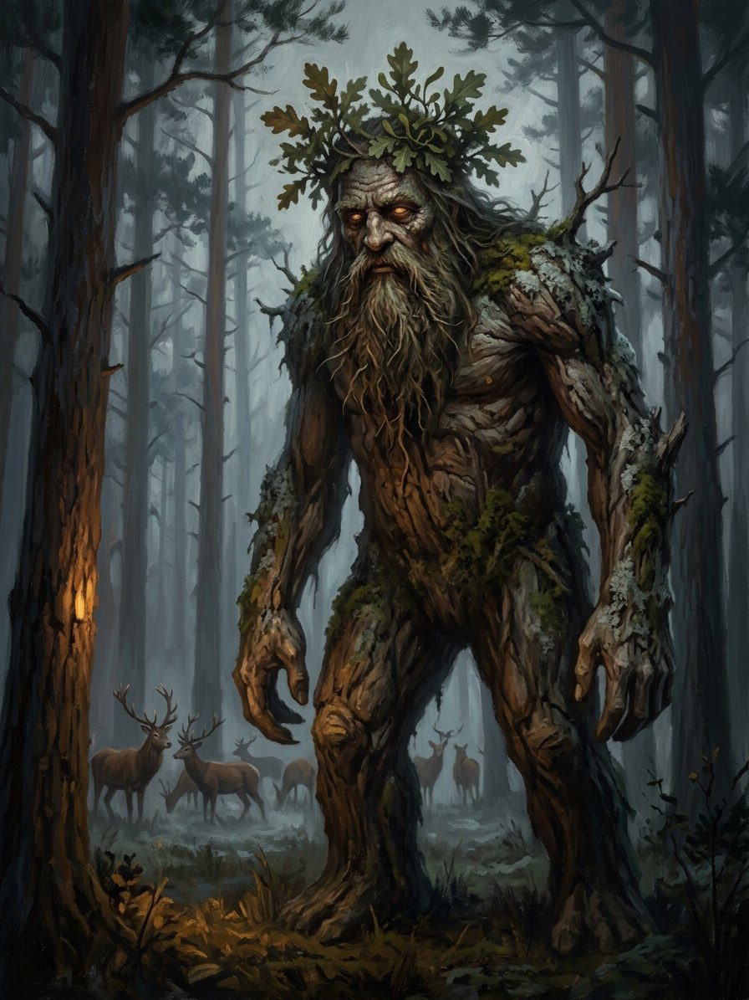

Girinis / miškinis (grove-keepers)¶
Folk source [Historical record]¶
Lithuanian tradition knows forest guardians under several names (girinis, miškinis, medinis), less sharply personified than the Slavic leshy. Pre-Christian Lithuanians venerated sacred groves (alkai) and particular trees, above all oaks, and cutting them was taboo; legends tell of trees that bled or took revenge. A stray-herb (klystžolė) makes whoever steps on it lose the way. Hunters made offerings for game.
Girinis / miškinis (grove-keepers)

Girinis / miškinis (grove-keepers) · creature¶
Tipas |
būtybė |
Status |
Sagos išmonė |
Pastaba |
Bestiary §11. Danger II → IV. |
In the saga (where the folk are half-wrong)¶
A girinis is the local face of the Root-Mother: the spirit of one grove, wood or ancient oak. It cares about people only as they affect the trees. It gives game and safe paths to those who ask and repay, and leads the greedy in circles until they die. The oaks of the alkai are the Pact’s pillars; each one felled loosens it.
Signs & habitat¶
Silence where there should be birdsong (Book I ch. 1, 20); paths that return to the same stump; a branch that falls exactly where you stood.
Before / after the Unbinding¶
Before: a stern host. After a grove is felled (Šventaragis 1387, and hundreds more) its girinis does not die: it becomes a homeless hunger attached to the family of the man who swung the axe, following them for generations.
Banes, wards, bargains, and their cost¶
Bread and salt on a stump before hunting or cutting, and „Leisk, medi“ („Permit me, tree“); never take more than you asked. Turn your clothes inside out if lost (it may let you go but will remember your face). The axe that felled a sacred oak must be thrown into running water.
Danger level¶
II hazard → IV deadly.
Story hooks¶
Book I: the silence in ch. 1 and 20 is the girinis listening for the Pact to break. Books II–V: the bishop’s woodcutters who cleared Šventaragis, and their haunted grandchildren.
Ryšiai
Patrons: Medeina — Forests and wild beasts are her old domain, now the Root-Mother’s.
Shard of: Šaknų Motina (Root-Mother) — Local face of the Root-Mother.
Origin [Historical record] forest guardians (girinis, miškinis, medinis) and the sacred groves (alkai) · [The saga's invention] the local face of the Root-Mother
Tier Dvasia · a shard of the Root-Mother
Danger II hazard → IV deadly
Habitat One grove, one wood, one ancient oak; the oaks of the alkai are the Pact's pillars
Wants To be asked: bread and salt on a stump, Leisk, medi, and never more than you asked for
Takes The greedy, led in circles until they die. A felled grove's girinis becomes a homeless hunger on the axeman's family
Signs Silence where there should be birdsong; paths that return to the same stump; a branch that falls exactly where you stood
Banes Clothes turned inside out if lost; the axe that felled a sacred oak thrown into running water
Half-wrong truth. The folk see a stern host. The truth: it cares about people only as they affect the trees. Each oak of the alkai felled loosens the Pact.
The silence. The hush of Book I ch. 1 and ch. 20 is the girinis listening for the Pact to break.
Giving. Game and safe paths to those who ask and repay.
Circling. Leads the greedy in circles until they die.
The homeless hunger. After Šventaragis (1387) and hundreds of other groves, it attaches to the family of the man who swung the axe and follows them for generations.
Salt and restraint. Salt on the stump, and never take more than you asked.
Turned clothes. It may let you go, but it will remember your face.
The axe. A good axe, thrown away.
Sąsajos¶
graph LR
girinis["Girinis / miškinis (grove-keepers)"]
medeina["Medeina"]
root_mother["Šaknų Motina (Root-Mother)"]
girinis -->|Shard of| root_mother
medeina -->|Patron of| girinis
style girinis stroke-width:3px